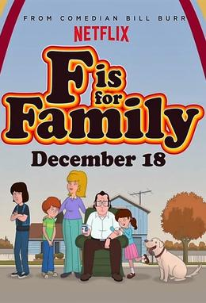
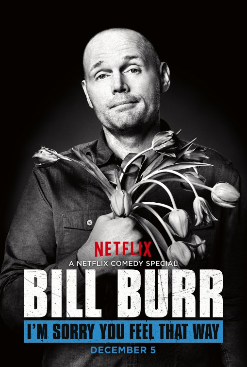

Ol' Billy Freckles

Bill Burr from the special "I'm Sorry You Feel That Way"
Bill Burr is an American stand-up comedian, actor, voice artist, writer, musician, producer, podcaster and social critic. He has released six stand-up specials. Outside of stand-up, he is known for hosting the Monday Morning Podcast, as a regular cast member of Chappelle's Show, playing Patrick Kuby in the AMC crime drama series Breaking Bad, and creating and starring in the Netflix animated sitcom F Is for Family. Burr also co-founded the All Things Comedy network.
In 2017, Rolling Stone ranked him 17th on its list of the 50 best stand-up comics of all time.
Early Life
William Frederic Burr was born on June 10, 1968 in Canton, Massachusetts, the son of nurse Linda Ann (née Wigent) and dentist Robert Edmund Burr. He is of German, Irish and French descent. Burr graduated from high school in 1987. In 1993, Burr obtained a bachelor's degree in radio from Emerson College in Boston, Massachusetts. Before starting his comedy career, he worked in warehouses; he stated that he enjoyed this job because "if my boss gave me a rough time, I could just get on a forklift and just, like, drive away".
Career
Burr's career began in 1992. He moved to New York City in 1995. Since May 2007, Burr has recorded a weekly one-hour podcast, Bill Burr's Monday Morning Podcast, in which he speaks about his past and recent experiences, current events, going on tour, and sports, and offers advice to questions submitted by the listeners. The podcast is available on Burr's website and on the All Things Comedy network. He is sometimes joined by his wife, Nia, and has featured guests and interviews with other comedians.
Burr also appears as a guest on radio shows and other comedians' podcasts, such as the now defunct Opie and Anthony Show, You Made It Weird with Pete Holmes, The Adam Carolla Show, The Joe Rogan Experience, WTF with Marc Maron, The Nerdist Podcast, and Nobody Likes Onions. Burr was also the very first guest on Tom Green's podcast. On April 18, 2011, he guest hosted the Hollywood Babble-On podcast alongside Ralph Garman.
In 2008, Burr's voice was featured in the game Grand Theft Auto IV as Jason Michaels of the biker gang The Lost MC in the mission "No Love Lost". In 2009, he reprised his role in the game's expansion pack The Lost and Damned.
Bill Burr's first hour-long special, Why Do I Do This?, took place in New York in 2008. Burr's special Let it Go was recorded at The Fillmore in San Francisco and premiered on Comedy Central on September 18, 2010. A later special, You People Are All The Same, premiered in 2012 as a Netflix exclusive. In 2014, Burr filmed his fourth hour-long special I'm Sorry You Feel That Way at the Tabernacle Theater in Atlanta, Georgia. The film was shot in black and white, which is rare for modern comedy specials. He was a regular on Chappelle's Show during its brief run.
Burr has been referred to as a "comedian's comedian" by observers of the US stand-up comedy circuit, meaning a comedian whose work is followed and appreciated by fellow professional comedians. Burr appeared in the movie Date Night as Detective Walsh. He has also appeared in the fourth and fifth seasons of AMC's Breaking Bad as Patrick Kuby. He played Mark Mullins in the 2013 buddy cop film The Heat.
 He stars in F Is for Family, which premiered on Netflix on December 18, 2015. The show, an animated sitcom, draws on Burr's stand-up and the "absurdity of political correctness". On April 17, 2016, Netflix approved the show for a second season. Burr writes and executive produces the series along with Michael Price. Burr's fifth hour-long special, Walk Your Way Out, debuted on Netflix on January 31, 2017. He appeared in the third episode (the episode is called "Bill Burr") of the second season of the HBO series Crashing.
Style
Rolling Stone magazine called Burr "the undisputed heavyweight champ of rage-fueled humor". Burr often portrays himself as "that loud guy in the bar" with "uninformed logic". In an interview with The Boston Globe, Burr stated, "I'm the 'dude, bro' guy." According to Montreal Gazette, Burr is "a cynic and a contrarian who has never paid any heed to political correctness". The New York Times in 2013 called Burr "one of the funniest, most distinctive voices in the country for years".
Burr cites George Carlin, Bill Cosby, Sam Kinison, Patrice O'Neal, and Richard Pryor as his comedic influences.
Personal life
Burr married producer, director, and screenwriter Nia Hill in 2013 and their daughter Lola, was born on January 20, 2017. They reside in Los Angeles, California and Hill sometimes appears as a guest on Burr's podcast.
Burr is a drummer and routinely performs alongside the Goddamn Comedy Jam. He is also a licensed helicopter pilot. Burr enjoys baking, particularly pie crust.
Comedy albums and specials
- Emotionally Unavailable (2003)
- Why Do I Do This? (2008)
- Let It Go (2010)
- You People Are All The Same (2012)
- Live at Andrew's House (2014)
- I'm Sorry You Feel That Way (2014)
- Walk Your Way Out (2017)